This Issue
August 2026 edition
567 vs 366
Net homes added to flipper-held inventory this edition (purchases less resales), against 366 in the same two months a year ago
Flipper buying held up while exits fell 44%, adding a net 567 homes to flipper inventory versus 366 a year ago
Flips sold came in at 357, down from 643 a year ago and 586 in the prior period. Acquisitions barely moved: 924 homes bought by flippers versus 1,009 a year ago. The gap is the story — a net 567 homes went into flipper hands this edition against 366 a year ago, and the modelled pipeline stood at 10,592 units in the latest month with 166 positions aging past the flip window. Counts are recorded instruments and lag four to eight weeks, and the most recent month can still grow.
Investor Playbook
What this issue's numbers suggest checking, by investor type. Observations from recorded data — not investment, legal, or tax advice.
Follow the buy count, not the flip count
Wholesalers
Flippers still took down 924 homes this edition against 1,009 a year ago, so the buy side is intact. The zips carrying both volume and visible flip exits are 75228 Casa View (37 buys, 12 flips), 75126 Forney (39 buys, 7 flips) and 75216 Oak Cliff South (49 buys, 5 flips); median buys there run roughly $303,000, $270,000 and $163,000 respectively. Granbury East 76048 logged 56 buys but only 2 flips — worth checking whether that demand is rental or owner-occupant before pricing a contract for a rehab buyer.
Underwrite the exit queue, not last year's exit rate
Flippers
Only 357 flips cleared against 643 a year ago while 924 were bought, and the pipeline shows 10,592 held units with 166 aging out in the latest month. Estimated median gross margin was about 25% of sale price versus roughly 21% a year ago, but that is gross — rehab and carry are not in public record, and 45% of these prices are back-computed. The data suggests sizing carry to a hold longer than the 174-day median and checking recent recorded exits in your own zip before committing.
Aged flipper positions are the acquisition channel this period
Landlords
Investor purchases totalled 2,870 against 3,123 a year ago, so competition at the courthouse eased slightly. With 10,592 units modelled as held and 166 aging out in the latest month, operators holding past their window are a plausible source of direct approaches. Single family made up 2,151 of purchases at an estimated median near $319,000; 2-4 units ran 128 deals at roughly $399,000. Worth checking parcels bought by flippers 12-plus months ago in Tarrant, where the flip share rose to 31.7%.
Bridge and extension demand where recorded originations have gone scarce
Private lenders
Recorded private loans fell to 100 from 399 a year ago while flipper-held inventory sits at 10,592. Over the trailing 12 months only 35.5% of observed investor purchases carried a recorded loan, and 44.2% of the 1,264 financed deals included rehab dollars. The gap that fills first is likely takeout and extension paper on positions past 174 days, not fresh purchase money. Median recorded private loan this edition is estimated near $233,000, so exposure per file is modest relative to the estimated $324,000 median purchase.
2-4 unit basis is priced level with houses
Multifamily investors
2-4 unit purchases numbered 128 at an estimated median near $399,000 and roughly $188 per square foot, essentially level with single family at about $189 per square foot on 2,151 deals. Small multi is nearly absent from flip exits — 0.6% of flips versus 1.6% a year ago — so resale comps for that product are thin and pricing leans on rents. Apartment 5+ recorded 36 purchases. Where per-foot basis is the same, the data suggests underwriting the unit count, not the discount.
Factoids
Numbers from this period a practitioner would repeat to a colleague. Each computed directly from recorded instruments.
249 selling operators — Distinct flip operators recording a sale this edition
trending down · vs 426 a year ago
The seller pool thinned faster than the deal count did. Top-10 operators took roughly 70% of flip revenue, against about 73% a year ago, so concentration is steady while the tail has stepped back.
174-day median hold — Median days held on flips that did sell
trending down · vs 198 days a year ago
The homes that cleared moved faster than last year, which points to selective exits rather than a broadly quicker market. Roughly a fifth of measured exits still took over a year.
31.7% of flips in Tarrant — Tarrant County share of flip sales
trending up · vs 24.6% a year ago
Tarrant closed most of the gap with Dallas, which held 37.8% versus 38.6% a year ago. Collin fell to 8.7% from 11.8%, so the exit map has shifted west.
1,654 sqft, built 1973 — Median size and vintage of homes flipped this edition
trending down · was 1,775 sqft and built 1981 a year ago
Product got smaller and older, and the median flip sat 32.6 km from the Dallas CBD versus 36.1 km a year ago. Comp sets built for 1980s suburban stock will not fit this basis.
121 assignments surfaced — Wholesale assignments visible on recorded deeds
trending up · vs 93 in the prior period; 126 a year ago
Assignment flow rebuilt from the prior period even as flip exits fell, which is consistent with buyers still taking down inventory. Treat the count as a floor, since most assignments never touch a deed.
100 private loans recorded — Recorded private-lender originations this edition
trending down · vs 399 a year ago
Recorded private credit is thin at the same time flipper inventory is building. Across the trailing 12 months, 35.5% of observed investor purchases carried a recorded loan and 44.2% of those financed deals included rehab funding.
Market Activity — Investor Purchases
Monthly count of investor purchases of MSA properties (left axis) and the median purchase price (right axis), trailing 13 months. The most recent month can grow up to ~15% as late recordings arrive.
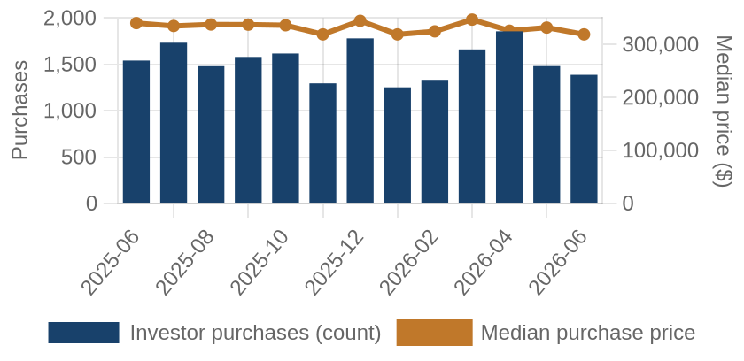
Investor purchases per month (bars) and median purchase price (line), trailing 13 months.
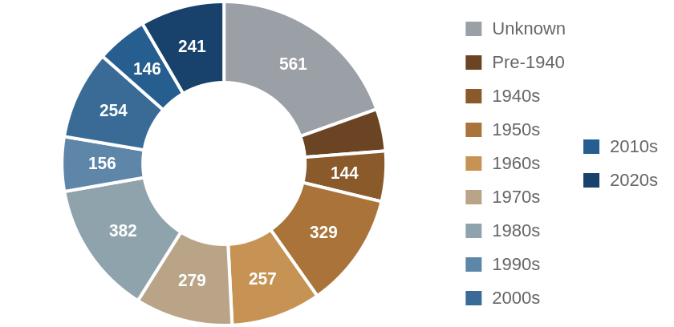
Which vintage of housing investors bought this edition, by decade built.
Where the Money Went
The geography of the period's investor activity: which zip codes saw the most recorded deals, and the largest individual transactions at street level.
The 8 busiest zip codes for investor deals
Pins rank the busiest zips by recorded investor deals (purchases + flips of existing homes) this period — #1 busiest; orange = top 3; pin size scales with deal volume. Median buy is the typical investor purchase; median sale the typical flip resale. Click a pin for details; full table below.
| # | Zip | Area | Purchases | Flips | Median buy | Median sale |
|---|
| #1 | 76048 | Granbury East | 56 | 2 | $240,012 | n/a |
| #2 | 75216 | Oak Cliff South | 49 | 5 | $162,758 | $237,500 |
| #3 | 75407 | Princeton | 49 | 2 | $228,217 | n/a |
| #4 | 75228 | Casa View | 37 | 12 | $302,575 | $347,344 |
| #5 | 76227 | Aubrey | 46 | 3 | $278,245 | n/a |
| #6 | 75126 | Forney | 39 | 7 | $269,990 | $327,262 |
| #7 | 76065 | MIDLOTHIAN | 43 | 1 | $595,459 | n/a |
| #8 | 76049 | Granbury | 34 | 3 | $341,893 | n/a |
Dollar figures on this page are estimates. This county does not disclose sale prices, so 45% of them are back-computed from the recorded mortgage at an assumed loan-to-value. Treat every price, margin and per-foot figure as indicative. Counts, dates, hold times, parties and geography come from the deed record itself and are unaffected.
A representative deal in each of the busiest zips
One deal per zip: the largest matching this market's typical house (typical for this market: 1674 sqft, 3 bed, built around 1978; priced within 4x the county assessment and under 5x its own zip's median).
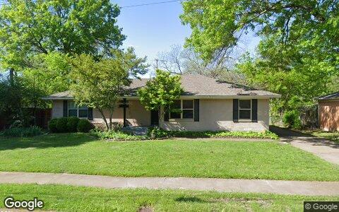
$814,625 · Purchase
2216 SPRINGHILL DR, Dallas TX 75228
Single family · 1,700 sqft · May 12
Street View Apr 2025 — before the purchase
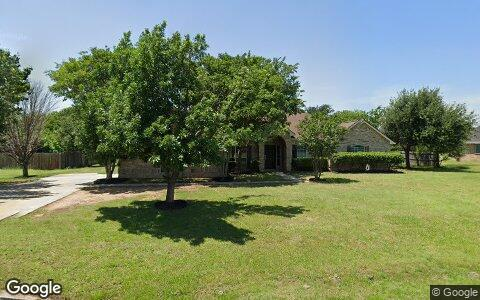
$518,035 · Flip
802 FAIRMEADOW CIR, Aubrey TX 76227
Single family · 2,144 sqft · Jun 26
Street View May 2026 — before the purchase
$422,940 · Purchase
3731 JOE WILSON RD, Midlothian TX 76065
Single family · 1,665 sqft · Jun 11
Street View Apr 2025 — before the purchase
$414,960 · Purchase
5300 COUNTY ROAD 437, Princeton TX 75407
Single family · 1,514 sqft · Jun 18
Street View Nov 2024 — before the purchase
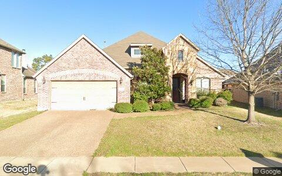
$351,120 · Purchase
506 ELM GROVE TRL, Forney TX 75126
Single family · 2,417 sqft · May 1
Street View Mar 2022 — before the purchase
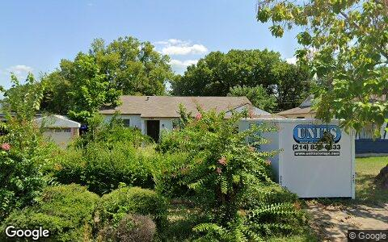
$347,263 · Purchase
3124 MODREE AVE, Dallas TX 75216
Single family · 2,501 sqft · Jun 30
Street View Aug 2025 — before the purchase
Deal sheet — private lending, in date order
Private loans recorded against residential property this period, oldest first.
| Date | Lender | Amount | Property | Use |
|---|
| May 4 | Martinez Victor | $260,000 | 6315 Plainview DR, Arlington TX 76018 | Single family |
| May 4 | Martinez Victor | $260,000 | 6315 Plainview DR, Arlington TX 76018 | Single family |
| May 4 | Martinez Victor | $260,000 | 6315 Plainview DR, Arlington TX 76018 | Single family |
| May 4 | Rosamond Vicki | $240,000 | 2125 Pecos DR, Grapevine TX 76051 | Single family |
| May 4 | Rosamond Vicki | $240,000 | 2125 Pecos DR, Grapevine TX 76051 | Single family |
| May 4 | Rosamond Vicki | $240,000 | 2125 Pecos DR, Grapevine TX 76051 | Single family |
| May 4 | Lucky Mohr Investments LP | $199,750 | 728 Hillcrest ST, Denton TX 76201 | Single family |
| May 4 | Lucky Mohr Investments LP | $199,750 | 728 Hillcrest ST, Denton TX 76201 | Single family |
Largest flip margin deals of the period, at street level
Gross margin = recorded sale price minus the flipper's recorded purchase price. Purchase deeds are recoverable for roughly 4 in 10 flips; rehab and carry costs are not public record.
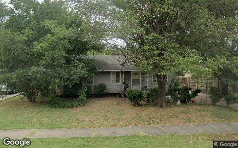
$606,620 gross · bought $210,000 (May 2026) → sold $816,620
3610 MANANA DR, Dallas TX 75220
Single family · 1,286 sqft · May 7
Street View Jul 2024 — before the flip (pre-renovation)
$605,150 gross · bought $246,050 (Sep 2024) → sold $851,200
409 CADDO ST, Josephine TX 75173
Single family · 1,530 sqft · Jun 9
Street View Apr 2023 — before the flip (pre-renovation)
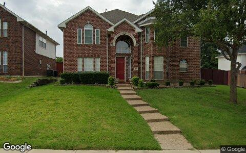
$461,310 gross · bought $319,200 (Mar 2026) → sold $780,510
1800 CHESTER DR, Plano TX 75025
Single family · 2,832 sqft · Jun 9
Street View Sep 2018 — before the flip (pre-renovation)
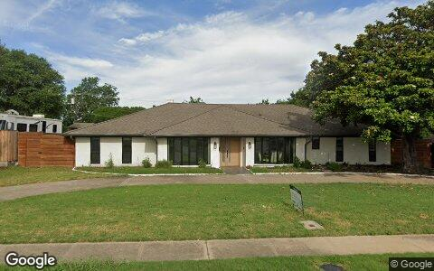
$394,800 gross · bought $350,000 (Nov 2025) → sold $744,800
11023 MARSH LN, Dallas TX 75229
Single family · 2,766 sqft · May 19
Street View May 2025 — before the flip (pre-renovation)
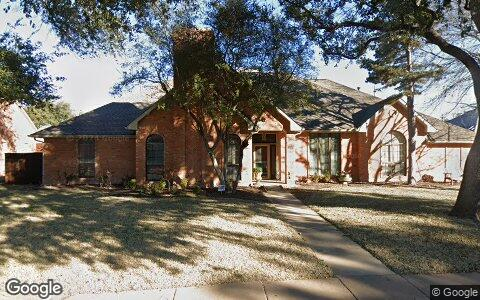
$360,323 gross · bought $931,000 (Aug 2025) → sold $1.3M
7111 HALPRIN CT, Dallas TX 75252
Single family · 3,084 sqft · Jun 1
Street View Jan 2024 — before the flip (pre-renovation)
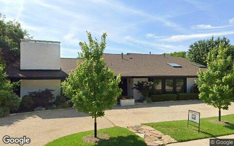
$342,991 gross · bought $997,500 (Sep 2025) → sold $1.3M
6408 DUFFIELD DR, Dallas TX 75248
Single family · 3,223 sqft · May 8
Street View May 2026 — during the flip
Flip Structure — Year over Year
How the flip market itself is changing: margins, who is doing the flipping, what they flip, and where. Same two calendar months, this year vs last, from the current data extract.
| Flip market structure | Same months last year | This edition |
|---|
| Flips sold | 643 | 357 |
| Median sale | $354,038 | $340,480 |
| Median $/sqft | $215 | $210 |
| Sale vs county-assessed | 1.29× | 1.21× |
| Median gross margin (matched buys) | $58,746 | $64,306 |
| Median margin % | 21% | 25% |
| Median hold | 6.5 mo | 5.7 mo |
| Homes bought by flippers | 1,009 | 924 |
| Net to inventory (bought − sold) | +366 | +567 |
| Active flippers | 426 | 249 |
| Top-10 flippers' revenue share | 73% | 70% |
| Median house: sqft / beds / built | 1775 / 3 / 1981 | 1654 / 3 / 1973 |
| Pre-1950 stock share | 7% | 7% |
| 2–4 unit share | 2% | 1% |
| Median distance from downtown | 36.1 km | 32.6 km |
Dollar figures on this page are estimates. This county does not disclose sale prices, so 45% of them are back-computed from the recorded mortgage at an assumed loan-to-value. Treat every price, margin and per-foot figure as indicative. Counts, dates, hold times, parties and geography come from the deed record itself and are unaffected.
Homes bought counts every deed recorded to a known flipper in the window, resold or not. Net to inventory is that minus flips sold. The standing stock is in the Flip Pipeline section.
Attributed profit per flip (per-investor aggregates, by drop period): Jul 25→Feb 26: 12,246 flips, $410,571/flip · Feb 26→Jun 26: 4,076 flips, n/a (revisions) · Jun 26→Aug 26: 1,483 flips, $279,729/flip.
County mix (share of flips, last year → this edition): Dallas 39%→38% · Tarrant 25%→32% · Collin 12%→9% · Denton 7%→7% · Parker 2%→3% · Johnson 6%→3% · Ellis 2%→3% · Kaufman 4%→3% · Hood 2%→2% · Hunt 2%→1% · Wise 0%→1% · Rockwall 1%→1% · Somervell 0%→0%.
Flip Pipeline — Buying, Selling and Inventory
Homes bought by known flippers and homes they resold, per month, alongside the stock sitting in flipper hands. A house enters inventory when a flipper buys it and leaves on the next recorded sale, at any price. Purchases still unsold after five years are treated as holds and drop out.
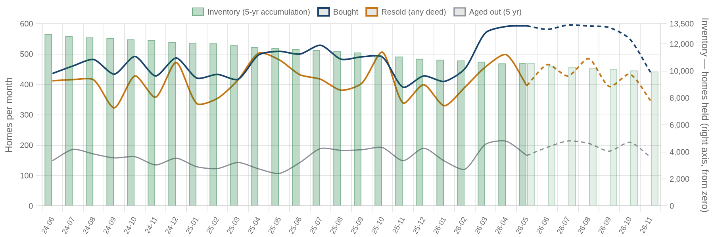
Solid = recorded, dashed = projected. Green bars are inventory on the right axis: homes bought and not yet resold. Aged out is purchases passing five years unsold. Inventory moves by bought minus resold minus aged out.
| Flip pipeline | Bought / mo | Resold / mo | Aged out / mo | Inventory |
|---|
| Latest recorded month (2026-05) | 593 | 396 | 166 | 10,592 |
| Projected (2026-11) | 440 | 347 | 161 | 9,953 |
Method: a straight-line trend through the last 24 months, adjusted for the month of the year, shown dashed as a projection. The series stops before the newest month or two, where deeds are still recording.
Who's Funding the Deals
First mortgages open on flipper purchases from Jul 2025 – Jun 2026 that have not yet resold. 35% carried recorded debt; the rest closed cash or off-record. Ranked by deal count.
35%
Purchases financed
1,264 of 3,561 flipper purchases carried a recorded first mortgage
$255,300
Typical loan
recorded lien amount; this county does not disclose sale prices, so loan-to-price cannot be computed here
| Lender | Loans | Borrowers | Median loan | Median purchase |
|---|
| United Wholesale Mortgage LLC | 52 | 45 | $338,702 | $298,632 |
| Rocket Mortgage LLC | 28 | 23 | $311,749 | $279,650 |
| Mortgage Research Center LLC | 26 | 23 | $340,000 | $333,200 |
| Everett Financial INC | 22 | 20 | $252,752 | $240,550 |
| American Portfolio MTG Corp | 20 | 20 | $271,492 | $260,888 |
| Crosscountry Mortgage LLC | 15 | 14 | $350,000 | $365,750 |
| Guild Mortgage Company LLC | 15 | 12 | $254,545 | $248,500 |
| Wells Fargo Bank NA | 14 | 14 | $154,918 | $154,742 |
| Dhi Mortgage Company LTD | 13 | 12 | $260,071 | $230,297 |
| Dhi Mortgage Company, LTD. | 13 | 8 | $326,869 | $226,501 |
Dollar figures on this page are estimates. This county does not disclose sale prices, so 45% of them are back-computed from the recorded mortgage at an assumed loan-to-value. Treat every price, margin and per-foot figure as indicative. Counts, dates, hold times, parties and geography come from the deed record itself and are unaffected.
Rates and terms are not published: the county feed models both. Borrowers counts the distinct flippers on each lender's book. Loan vs price is the recorded first mortgage divided by what the buyer paid. Above 1.00x the lender is funding purchase plus rehab; below it the buyer brought cash to the table. Blanket mortgages covering several parcels are excluded, as are loans outside 0.1x-3x the price. Rates and points are not public record.
Flipper Profile — The Working Flipper
The 70th–90th percentile of local flippers by lifetime flip count — the established operators below the whales: 4–9 lifetime flips each. Bath counts are not in the assessor extract.
1,428
Flippers in the band
each with 4–9 lifetime flips (avg 5.5)
$27,876
Median gross margin
8,023 flips matched to their purchase price
5.7 mo
Typical hold
purchase to resale, matched deals
1674 sqft · 3 bd
Typical house
median year built 1978
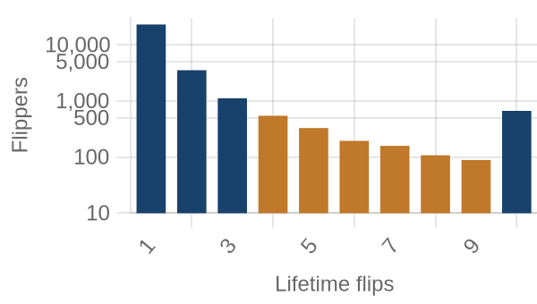
flippers by lifetime flips · orange = this band
Where they work: Granbury East (76048) 3% · Oak Cliff South (75216) 2% · Fort Worth South (76104) 2% · South Dallas East (75215) 2% · Pleasant Grove (75217) 2%.
Market Pulse
| per month, Jul 2025–Feb 2026 | per month, Jun–Aug 2026 | change | avg/mo 2yr | avg/mo 4yr |
|---|
| ▼ Homes bought by flippers | 505 | 462 | -8% | 476 | 477 |
| ▼ Flips sold (deeds) | 322 | 179 | -44% | 411 | 424 |
| ▼ Lending deals funded | 1,037 | 957 | -8% | — | — |
| ▼ Seller/notes held (net) | 4,784 | 702 | -85% | — | — |
| ▼ Investors (net) | 1,312 | -535 | −1,847/mo | — | — |
Flips and flipper purchases = recorded deeds, same two months each year; their 2- and 4-year columns are per-month averages of the deed series. The remaining rows come from the investor file, which spans 13 months, so they have no multi-year average (2026: Jun 2026 → Aug 2026; 2025: Jul 2025 → Feb 2026).
Past Issues
Methodology
Source Data
County recorder & assessor via FARES
Every figure is computed from recorded instruments (deeds, mortgages, assignments) and assessor property records for the five counties of the Dallas-Fort Worth-Elyria MSA. No surveys, no estimates, no listings data.
This edition analyzes transactions dated May 1 – June 30, 2026, as recorded through the 2026-08 data extract.
Who Counts as an Investor
Transaction-pattern identification
Investors are entities whose recorded transaction history looks like investing: rental holding (landlords), short-hold resales (flippers), private mortgage lending, note holding, or contract assignment (wholesalers). Banks, homebuilders, iBuyers, SFR funds, and government entities are identified by name and reported separately from small investors.
How Comparisons Work
Attribution deltas + same-window comparisons
The Market Pulse reports activity attributed between successive data drops, from the per-investor lifetime totals maintained upstream — periods differ in length, so per-month rates are shown. Elsewhere, "vs. year ago" compares the same calendar months one year earlier, counted from the same data extract. Transfers under $5,000 (quitclaims, partial interests) are excluded everywhere. Counts lag recording by 4–8 weeks, and the newest month can grow up to ~15% as late records arrive — direction is reliable before magnitude.
Known Limits
Floors, not ceilings
Wholesale assignments only appear when they touch a recorded deed, so those counts are a floor. Flip hold times are measured from the prior recorded sale. Names are the owner of record, which may be an LLC or trust.
About
Purpose
A working tool for small real estate investors in Greater Dallas-Fort Worth: what actually closed, where, at what prices, and what it suggests checking next — one theme per issue.
Cadence
Published with each bi-monthly data drop, covering the two most recent complete months of recorded activity.
Disclaimer
Observations from public records, not investment, legal, or tax advice. Past activity does not guarantee future results. Verify any property or counterparty independently before transacting.